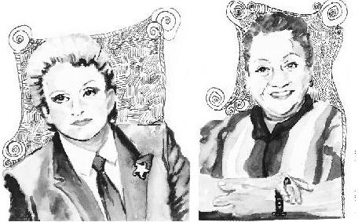

1950'li yıllar, Büyükada'da bir cenaze merasimi var. Ardından camiye gidiliyor, camide mevlit okunacak. İçeride yirmi Müslüman Türk, otuz Hıristiyan Rum, on Musevi vatandaşımız var. Hepsi caminin içinde gözyaşı döküp, mevlidi dinliyorlar. Çıkışta da sarılıyorlar birbirlerine, öyle ayrılıyorlar. Böyle bir hoşgörü kültürünü dünyanın çok az ülkesinde görürsünüz. Bu bizim ülkemize hastır.
Hermann Hesse'nin bir şiiri:
"İster ata ister taşıta bin
Ha iki olmuşsun ha üç
Son adımı tek başına atacaksın
Ne kadar güç."
İnancı, ırkı ne olursa olsun birbirini ilk adımında, son adımında yalnız bırakmayanların ülkesiydi burası.
1930-1950 yılları arası, Kayseri'de nüfus 80.000 iken 10.000 Ermeni vatandaşımız yaşamaktaydı. Ramazanda hiçbiri dışarıda bir şey yemez ve Müslüman gibi yaşarlar, Ramazan Bayramı'nda da karşılıklı ziyarete giderlerdi. Çocuklar Türk-Ermeni ayırt etmeden el öper, bahşiş alırlardı. Sorun Kayseri'nin eskilerine, Anadolu'nun eskilerine, anlatsınlar.
Balkan Savaşı döneminde Yunanistan'dan, Girit'ten kaçıp Türkiye'ye gelen Türklerin çoğu, yolda çeteciler çalmasın diye, altınlarını komşularına bıraktılar ve geri gidip alamadılar. Otuz yıl sonra bile Yunanlı kalktı, geldi, buldu komşusunu Türkiye'de, verdi parayı, sarılıp ağlaştılar.
Anadolu'nun kültürü yardımlaşma, sevgi, hürmet üzerine kuruludur. Çürür mü? Bilmem.
Aranızda anne-babasını kendi seçmiş olan, "Ben şu ülkede doğayım, mümkünse ırkım da şu olsun!" demiş olan var mı?
Yok.
O zaman Türk de doğabilirdiniz, Rum da, Kürt de, Çingene de.
Elde var bir.
Aranızda kendi anne-babasının inancı dışında bir inancı olan, farklı bir dine mensup olan kaç kişi var?
Yüzde bir, bilemedin iki-üç.
Onların da çoğunluğu büyük kentlerde yaşayan bir grup. "Annem, babam Allah'a tapıyordu ama ben paraya tapıyoruum, ciksim ben, vauuv" grubu.
O zaman bunları kendimiz belirlemedik. Kendimizin belirlemediği inanç ve ırklarımızın, başkalarınınkinden daha üstün olduğu, daha iyi olduğu varsayımı, inanıp da üzerine ideoloji oluşturabileceğiniz en saçma tezdir.
Hitler sağ değil ya, atıp tutuyoruz, idare edin.
Bu arada PKK'nin siyasi kanadının (partinin adı devamlı değişip durduğu için asıl sıfatını yazıyorum), Kürtçü, ırkçı siyasetin başındaki adamın Türk diye soyadı olması ne yaman çelişkidir.
Sen kendini üstün sanırsın, o kendini üstün sanır, öyle uğraşır durursun.
Bana öyle geliyor ki:
Farklı farklı evlerde, farklı dillerde aynı Allah'a dua edip duruyoruz.
Eminim ateistler de kozmik gücü çok beğeniyorlardır.
Hepimizin inancı saygıyı, hürmeti çok hak ediyor. Çünkü ancak o zaman kendi inancın da hürmet görür. Bunu söylemeyi en çok hak eden insanların olduğu ülkede yaşıyorsunuz.
Kani Karaca Ramazan'da, İstanbul Yeni Cami'de mevlit okurken, dönemin Ortodoks Patrik'i onu dinlemeye gelirmiş. Gözleri görmeyen Kani Karaca'nın kulağına fısıldarlarmış Patrik'in geldiğini. Karaca da Patrik'in sevdiği makamdan okurmuş mevlidi.
Yeryüzünde yaşayan insanlar sadece insan oldukları için saygıyı hak ediyorlar.
Adam kendi kötüyse herkesi kötü görür, kendi iyiyse herkesi iyi.
Polyannacılık oynamayın ama "O da mı kötü, bu da mı kötü?" gözüyle bakarsanız, deliğinden çıkamayan korkaklar gibi bakarsınız etrafa.
İzgören&Akın'da ve Elma'da 30-40 kişi beraber eve ekmek götürüyoruz. Size yemin ederim, hiç merak etmiyorum hangi arkadaşım Sünni, hangisi Alevi, hangisi ateist, hangisi Hıristiyan, kim Kürt, kim Türk, kim Süryani, kim hangi ırka mensup. Kimin hangi ırka, hangi dine mensup olduğunu bilmez, oturup iş yaparız beraber.
Hangimizin cennete gideceğini de ne kadar iyi kalpli olduğumuz belirler gibi geliyor bana. Rüşvetin, yolsuzluğun en büyüğünü yapıp hacda gezenlerden önceliği olur cennette iyilerin.
Adamın biri suya sabuna dokunmadan yaşarmış. Ne iyiliği var, ne kötülüğü. Bir papaza danışmış:
– Durumum bu, ne yapayım?
– Hiç kötülüğün de iyiliğin de yoksa ufak da olsa birine yardımda bulun, cennete gidersin.
Gitmiş bir fakire bir dolar vermiş.
Ölmüş öteki dünyaya gitmiş, sorguda deftere bakanlar çok şaşırmışlar.
– Allah Allah, ne bir iyiliğin var, ne de bir kötülüğün.
– İyi bakın deftere, bir dolar verdim fakirin birine.
– Ha doğru, ne yapalım arkadaşlar?
– Bir dolar verdim fakire. Cehenneme atamazsınız, cennete yollayın beni.
– Ne yapalım arkadaşlar hiç kimseye faydası olmamış 80 sene?
– Bir doları unutma kardeşim, geçen ay bir dolar verdim fakire, ben boşa mı verdim parayı?
– Verin şunun bir dolarını geri, atın cehenneme.
Çok sevdiğim bir arkadaşım, canımdır kendisi, şimdi bu satırları okuyacak. Yıllar, yıllar önce "Şerif Ağabey, ben seninle bir şey konuşmak istiyorum" dedi.
– Olur konuşalım.
– Evde konuşmayalım, dışarıda konuşalım.
İkimiz çıktık, yakındaki parka yürüdük.
– Ağabey yıllardır arkadaşız, senin bilmediğin bir şey var. Artık sana söylemek istiyorum.
– Söyle.
– Ağabey, ben Aleviyim.
– Eeeee?
– Bil istedim.
– Niye bileyim?
– Ne bileyim, bil istedim.
O canım kardeşim demek ki Alevi olduğu duyulduğunda öyle farklı tepkiler görmüş ki bunu yutkuna yutkuna bana söylüyor.
– Sen benim hayattaki en iyi, en candan arkadaşlarımdan birisin, bunu bilmeden önceki ve şu anki bakışımda sana karşı gram değişiklik olmadı. Bana ne senin neye inandığından, cinsel tercihinden, ırkından. "Adam mısın, değil misin?", ben ona bakarım. Buradaki adam kelimesini rahatlıkla Zeki Müren için kullanabilirsiniz, verdiği her sözü tuttu, hayat boyu ihtiyaç içindekilere yardım etti. Kimseye de anlatmadı. Rahmetli Adile Naşit herkesten daha çok adamdı, kırmadı kimseyi, herkesi gülümsete gülümsete yaşadı gitti.

Şehzade, çingenenin kızına âşık olmuş, padişah babasını da ikna etmiş, gitmişler derme çatma eve. Dışarıda yeniçeriler, kapıkulu askerleri, vezirler, ihtişam.
Padişah: "Allah'ın emri Peygamberin kavliyle kızınızı oğlumuza istiyoruz" demiş.
Çingene sinirle kalkmış ayağa:
– Benim size verecek kızım yok, yürüyün gidin lan!
Herkes şokta, padişah kıpkırmızı, şehzade, "Ne olur baba, seviyorum, boynunu vurdurma lütfen." Padişah oğlunun hatırına yürümüş çıkmış. Sarayda konuşmuşlar "Ne yapalım, ne yapalım?" Biri demiş ki:
– Bizim başmabeyinci çingendir. O gitsin, birbirlerini anlarlar.
Başmabeyinci gitmiş eve, yanında şehzade.
– Lan şerefsiz, dümbük, padişah kızı istemiş, niye vermedin dürzü, senin taa...
Çingene babanın yüzüne bir gülümseme gelmiş:
– Böyle adam gibi isteseydi verirdik, tamamdır şimdi evlensinler. Hayırlı olsun!